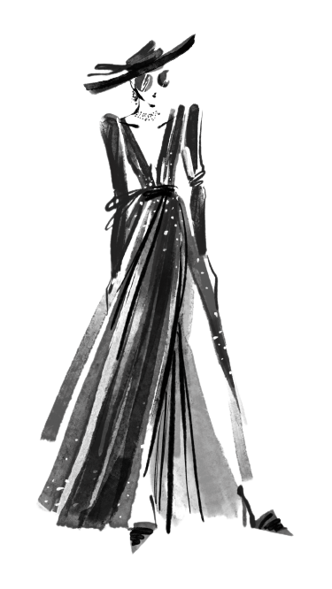

Sobre Nós
Cambridge | UK
A agência de modelos CatwalkModel é uma das mais renomadas e influentes do mundo da moda. Com uma história rica e um portfólio impressionante de talentos, ela tem moldado e definido os padrões de beleza e estilo por décadas. Fundada por visionários apaixonados pela indústria da moda, esta agência se destaca por descobrir e promover modelos icônicos que se tornaram verdadeiras referências no cenário global. Sua abordagem inovadora e compromisso com a excelência fizeram dela um pilar na indústria, influenciando tendências e estabelecendo um legado duradouro no mundo da moda.
Uma agência de modelos modesta começou em um pequeno escritório, mas à medida que conquistava o mercado, investiu em prédios modernos para sedes. Adotando inovações arquitetônicas, os novos edifícios refletiam a visão contemporânea da empresa, atraindo talentos e clientes. O crescimento da agência não apenas se traduziu em expansão física, mas também em abordagens inovadoras para representação de modelos, solidificando sua posição na indústria da moda.
